Synopsis
Pomona Artificiale is a story about apples, about wax pomological models, about industrialization and imperialism, about fruit cultivation and scientific positivism, about illuminism, about biodiversity and demanding markets, breath and controlled atmospheres, about life and, ultimately, its sublimation or negation: rot.
Pomona Artificiale premiered at Melted Film Festival during Dutch Design Week 25. A version of the script, adapted as visual essay, was featured on Robida 11. Click here to access the full article.
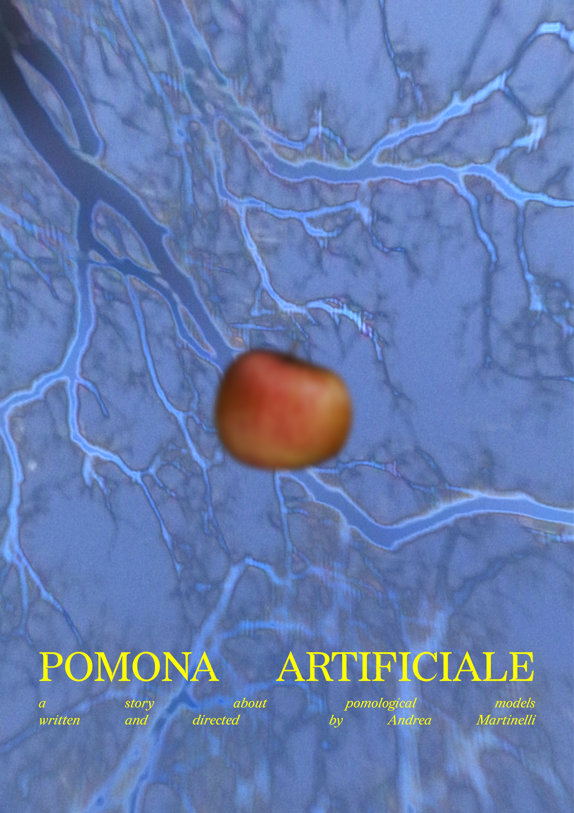
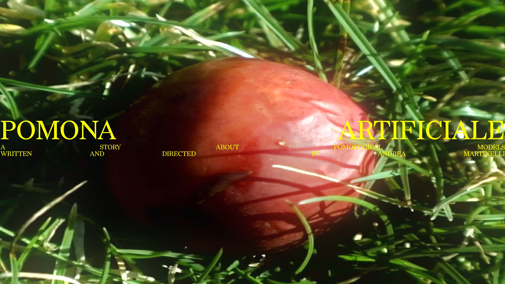
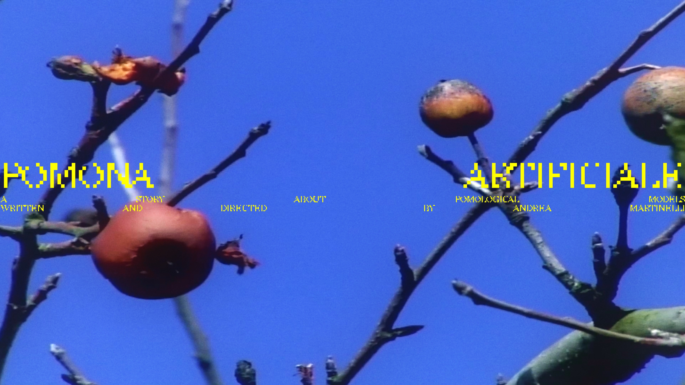
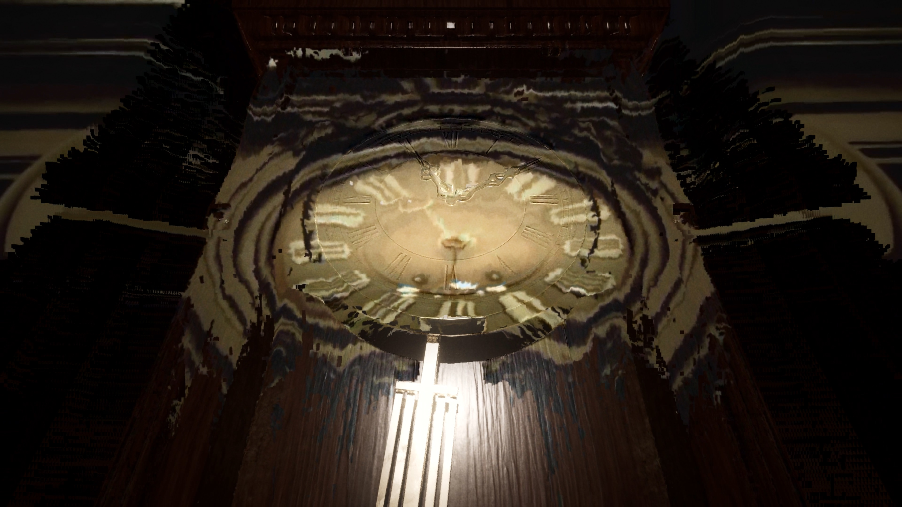
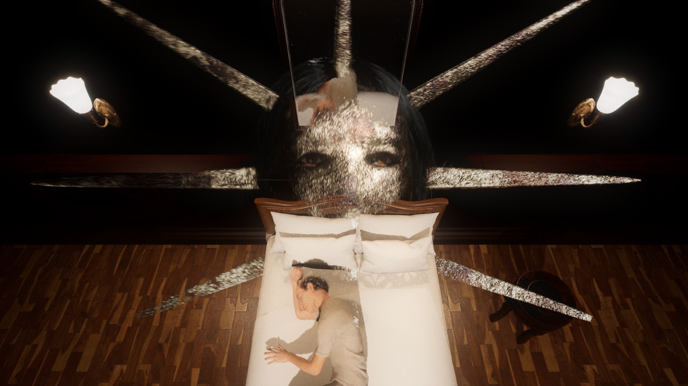
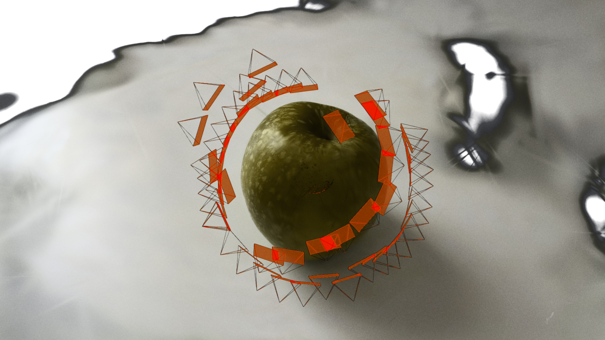
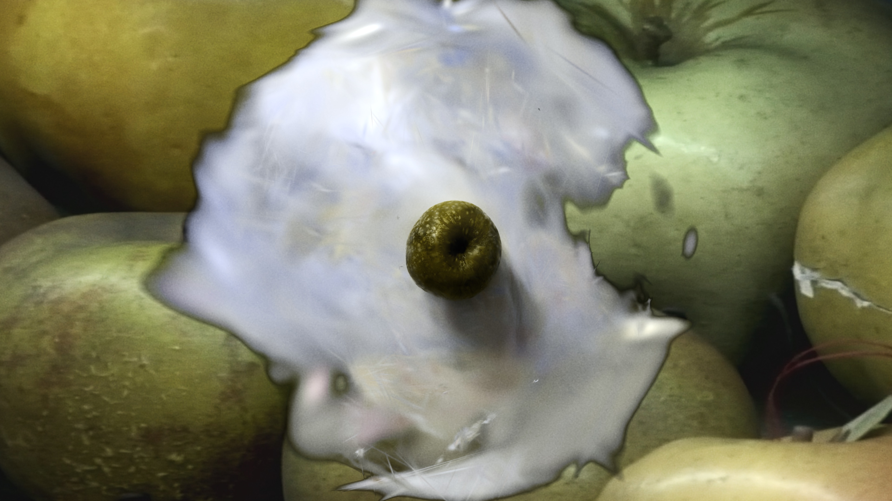
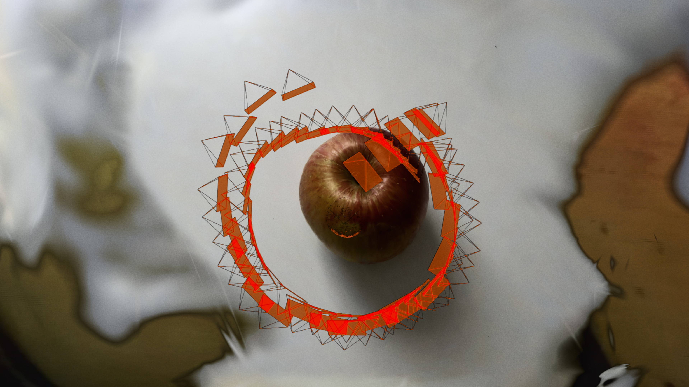
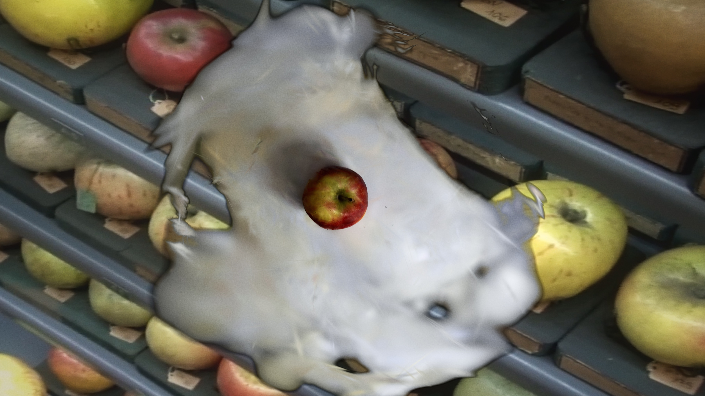
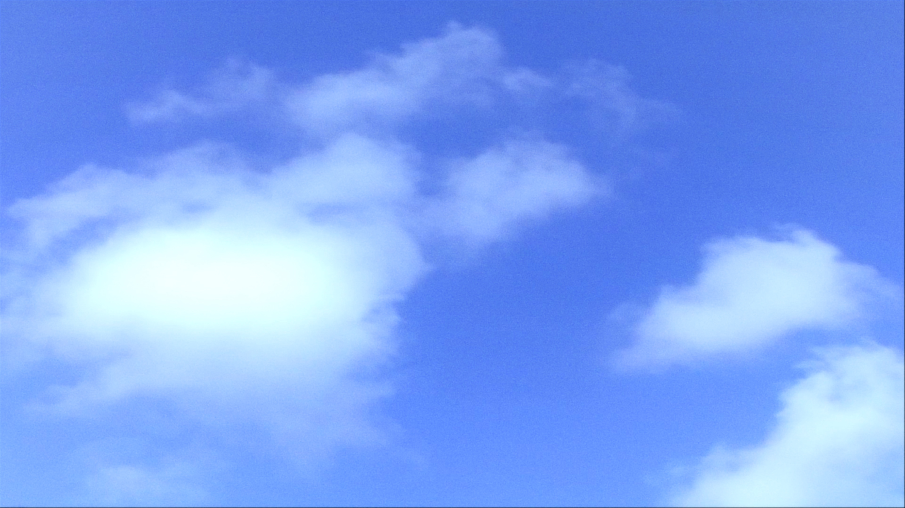
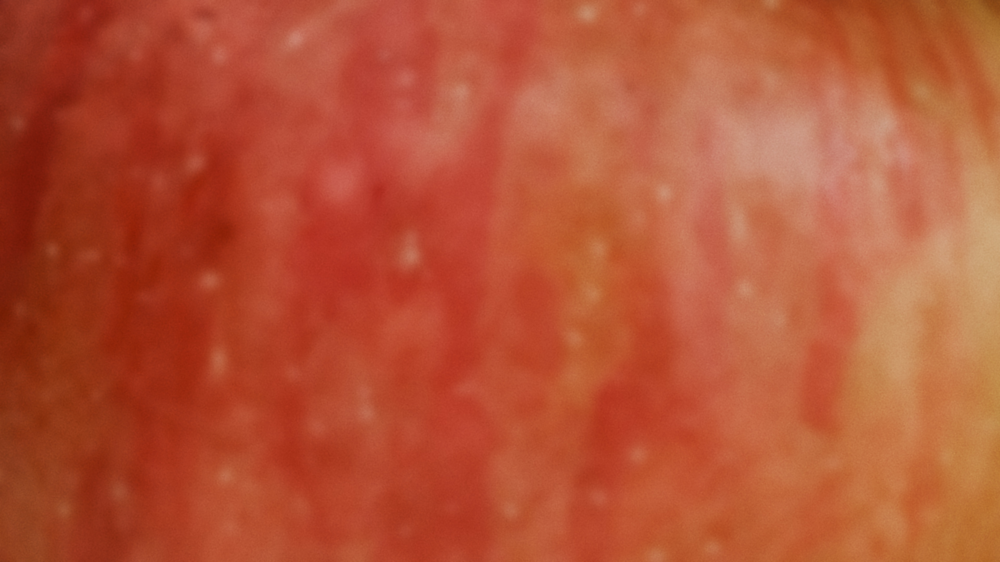
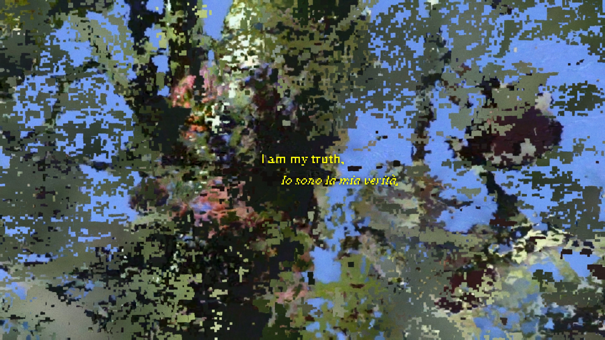
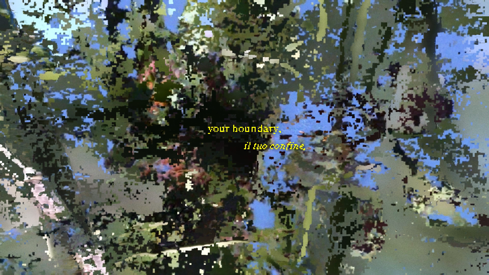
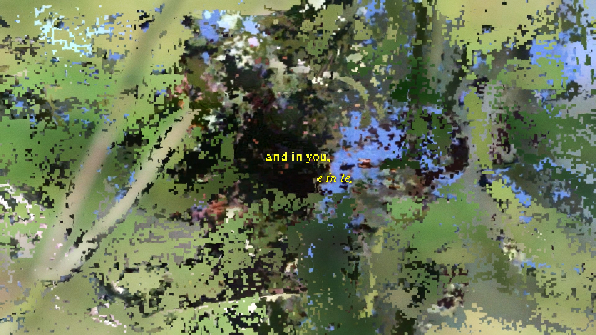
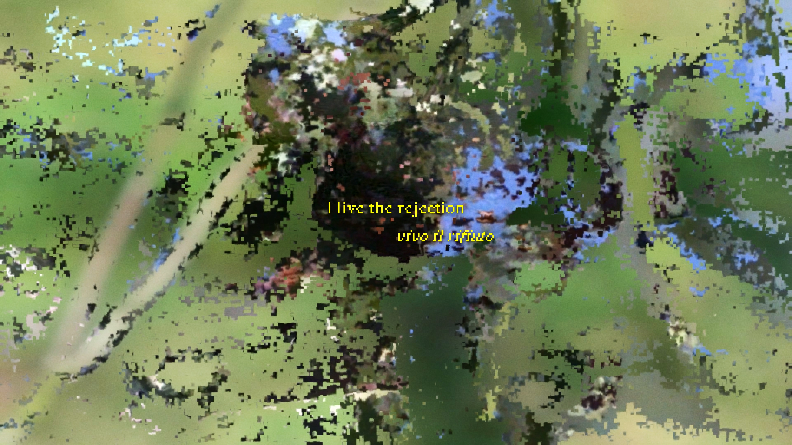
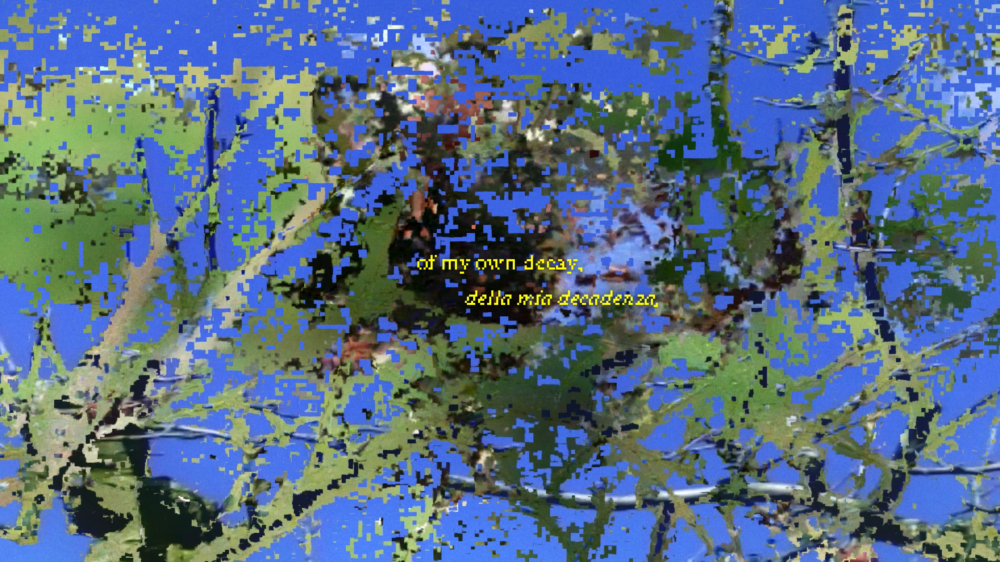
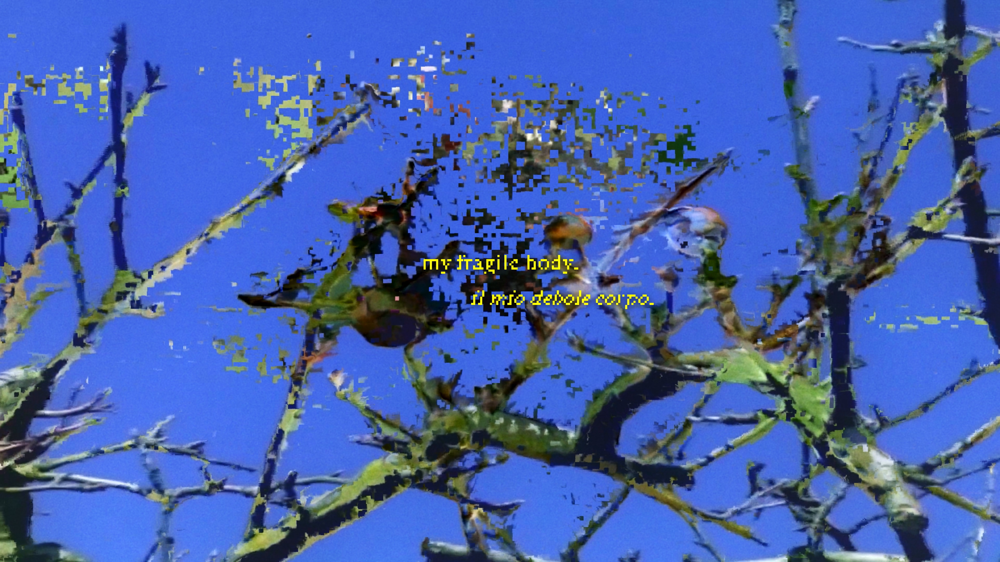